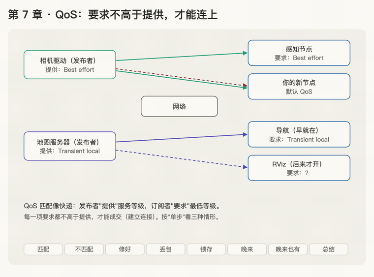

第 7 章 · QoS：通信质量设置
本章回答：同一个话题，相机图像要"最新的、丢几帧无所谓"，控制指令要"一条都不能丢"，地图要"后来的人也能拿到"，这些怎么设？两边设置不一样会怎样？为什么有时节点明明在、话题名也对，却收不到消息？
讲解日期：2026-11-13 · 上一章：第 6 章 自定义接口与动作 · 下一章：第 8 章 中间件、发现与网络
对应原文：ros2_documentation/source/ROS-Framework/interfaces/topics/About-Quality-of-Service-Settings.rst（QoS policies、QoS profiles、QoS compatibilities、QoS events 四节）（路径相对ros2/materials/）
对应 study-plan 阶段 C1，动手里程碑 R-M3。
本章缩写：QoS = Quality of Service（服务 / 质量）；TCP = Transmission Control Protocol（传输 / 控制 / 协议：保证送达、按序的网络协议）；UDP = User Datagram Protocol（用户 / 数据报 / 协议：不保证送达）；Wi-Fi（无线局域网的商标名，不是缩写）；RMW = ROS MiddleWare。全部缩写见 附录 · 缩写与术语表
本章先看总图，再分 3 步：
| 步 | 内容 | 状态 |
|---|---|---|
| 0 | 总图：发布者"提供"、订阅者"要求"，三种情形 | ✅ |
| 1 | 七个策略：历史 / 深度 / 可靠性 / 持久性 / 截止时间 / 寿命 / 活性 | ✅ |
| 2 | 预设配置与兼容规则："要求 vs 提供" | ✅ |
| 3 | 代码里怎么设、怎么查、出事件怎么知道 | ✅ |
讲解
总图 · "要求"不能高于"提供"

可交互版：animations/07-qos-matching.html（内置浏览器：http://localhost:8340/07-qos-matching.html）。
类比：快递。 寄件方（发布者）说"我提供次日达、保价"，收件方（订阅者）说"我要求至少两日达"。提供的比要求的好或一样，就成交；收件方要求"必须保价"，寄件方偏偏不提供，就谈不成，包裹根本不会发。
第 1 步 · 七个策略
依据：ROS-Framework/interfaces/topics/About-Quality-of-Service-Settings.rst（下称"QoS 文档"）QoS policies 一节。一组策略合起来叫一个 QoS 配置（profile）。
| 策略 | 选项 | 白话 | 典型用途 |
|---|---|---|---|
| History 历史 | Keep last（只留最近 N 条）/ Keep all（全留，受中间件资源上限） | 没处理完的消息留多少 | 几乎都用 Keep last |
| Depth 深度 | N | Keep last 时留几条 | 默认 10；传感器常用 5 |
| Reliability 可靠性 | Reliable（保证送达，丢了重传）/ Best effort（尽量送，丢了就丢） | 丢包时重不重发 | 指令用 Reliable，高频传感器用 Best effort |
| Durability 持久性 | Volatile（不保存）/ Transient local（发布者保存最近的消息，后来加入的订阅者也能收到） | 晚来的人能不能拿到旧消息 | 地图、机器人描述、静态坐标用 Transient local |
| Deadline 截止时间 | 时长 | 相邻两条消息最多隔多久 | 心跳、控制指令：超时就报警 |
| Lifespan 寿命 | 时长 | 消息从发出到收到，超过多久算过期（过期直接丢掉） | 老旧的传感器数据不要用 |
| Liveliness 活性 + Lease duration 租期 | Automatic / Manual by topic + 时长 | 发布者多久不"报平安"就算它挂了 | 检测关键节点是否还活着 |
几个细节（QoS 文档 Comparison to ROS 1）：
- ROS 1 的
queue_size≈ ROS 2 的 History + Depth。 - Reliable 也是基于 UDP 实现的（DDS 自己做确认和重传），不是 TCP。所以它仍然能用组播。
- Transient local ≈ ROS 1 的"latched（锁存）"话题。
Reliable 不是越可靠越好。 网络差时，Reliable 会不停重传旧的图像帧，新帧排在后面，延迟越积越大。对 30 Hz 的相机，宁可丢一帧也要最新的，所以传感器数据默认用 Best effort。
第 2 步 · 预设配置与兼容规则
预设配置（QoS 文档 QoS profiles 一节）：
| 预设 | 设置 | 用于 |
|---|---|---|
| 默认（发布 / 订阅） | Keep last 10、Reliable、Volatile | 一般话题；和 ROS 1 行为接近 |
| Services | Reliable、Volatile | 服务。必须 Volatile：否则重启的服务端可能收到过时的旧请求 |
| Sensor data | Best effort、较小队列 | 相机、激光雷达、IMU |
| Parameters | 和服务类似，但队列深得多 | 参数服务 |
| System default | 全用中间件自己的默认值 | 不同中间件可能不同 |
Python 里：from rclpy.qos import qos_profile_sensor_data；C++ 里 rclcpp::SensorDataQoS()。
兼容规则："要求 vs 提供"（QoS 文档 QoS compatibilities 一节）：订阅者要求的是它能接受的最低质量，发布者提供的是它能给的最高质量。每一项要求都不高于提供，才能连上。
可靠性：
| 发布者提供 | 订阅者要求 | 能连上？ |
|---|---|---|
| Best effort | Best effort | ✅ |
| Best effort | Reliable | ❌ |
| Reliable | Best effort | ✅ |
| Reliable | Reliable | ✅ |
持久性：
| 发布者提供 | 订阅者要求 | 能连上？ | 结果 |
|---|---|---|---|
| Volatile | Volatile | ✅ | 只收新消息 |
| Volatile | Transient local | ❌ | — |
| Transient local | Volatile | ✅ | 只收新消息 |
| Transient local | Transient local | ✅ | 新消息和旧消息都收 |
截止时间、租期同理：订阅者要求的时长不能比发布者提供的更短（要求更频繁 = 要求更高）。
最常见的坑：订阅者用默认（Reliable），发布者是相机驱动（Best effort）。连不上，也不会报错退出，只是收不到消息。ROS 1 里同类型同名话题一定能连，所以 ROS 1 转过来的人特别容易踩（QoS 文档兼容一节末尾）。
另一个坑：订阅 /map（地图服务器用 Transient local 发，只发一次），订阅者却用默认的 Volatile。能连上，但因为地图早就发过了，晚来的订阅者永远等不到。要收"锁存"的消息，两边都得是 Transient local。
另外：一个发布者可以同时连多个要求不同的订阅者，每一对单独判断，互不影响。
第 3 步 · 代码里怎么设、怎么查、出事件怎么知道
设：第 5 章 create_publisher(String, 'topic', 10) 里的 10 是简写，等于"默认配置 + 深度 10"。完整写法：
from rclpy.qos import QoSProfile, ReliabilityPolicy, DurabilityPolicy, HistoryPolicy, qos_profile_sensor_data
# 传感器订阅：直接用预设
self.create_subscription(Image, 'camera/image_raw', self.on_image, qos_profile_sensor_data)
# 地图订阅：要收"锁存"消息
map_qos = QoSProfile(depth=1,
reliability=ReliabilityPolicy.RELIABLE,
durability=DurabilityPolicy.TRANSIENT_LOCAL)
self.create_subscription(OccupancyGrid, 'map', self.on_map, map_qos)
查：ros2 topic info /话题 --verbose 会列出每个发布者、订阅者的 QoS（第 2 章第 2 步）。收不到消息时第一个就查这个。命令行工具也能指定 QoS：ros2 topic echo --qos-reliability best_effort /camera/image_raw。
事件（QoS 文档 QoS events 一节）：可以给发布者 / 订阅者挂"QoS 事件回调"，像处理消息一样处理异常：
| 发布者一侧 | 订阅者一侧 |
|---|---|
| Offered deadline missed：没按截止时间发 | Requested deadline missed：没按时收到 |
| Liveliness lost：没按时报平安 | Liveliness changed：某个发布者失联 / 恢复 |
| Offered incompatible QoS：发现要求比我高的订阅者，连不上 | Requested incompatible QoS：发现提供不够的发布者，连不上 |
用 Deadline 做安全停车：底盘驱动订阅 cmd_vel，设 Deadline 100 ms。上层控制节点卡死、超过 100 ms 没新指令，订阅者触发"requested deadline missed"，驱动立刻停车。这就是第 2 章"看门狗"的一种标准实现。
不改代码改 QoS：节点作者可以开放"QoS 覆盖"，用户在参数文件里改（.../Working-with-topics/Configuring-QoS-Overrides.rst）。第 2 章 param dump 里看到的 qos_overrides./parameter_events.publisher... 就是这个机制。
R-M3 要做什么：同一话题分别用 Reliable / Best effort、不同深度，用 Linux 的 tc netem 人为制造丢包和延迟，测接收率和延迟。体会"Reliable 在差网络下延迟会越积越大"。
练习与作答记录
练习 7-1（第 1 步）：给下面四个话题选 Reliability 和 Durability，并说明理由：(a) 30 Hz 彩色图像；(b) 底盘速度指令 cmd_vel；(c) 只发一次的静态地图 /map；(d) 急停信号。
- 作答：（待作答）
练习 7-2（第 2 步）：激光雷达驱动用 Sensor data 预设发布 /scan，你的节点用 create_subscription(LaserScan, 'scan', cb, 10) 订阅。能收到吗？为什么？怎么改？
- 作答：（待作答）
练习 7-3（第 2 步）：发布者 Deadline 设为 100 ms，订阅者要求 Deadline 50 ms。能连上吗？反过来呢？
- 作答：（待作答）
练习 7-4（第 3 步）：你怀疑某个话题 QoS 不匹配，用哪条命令确认？在输出里看哪几项？
- 作答：（待作答）
口诀
- 七策略：历史、深度、可靠、持久，截止、寿命、活性。
- 匹配：订阅者要求，发布者提供；要求不高于提供才成交，不成交不报错、只是收不到。
- 常用搭配：传感器尽力而为（Best effort）；指令可靠（Reliable）；地图、静态信息两边都 Transient local。
- 排查：收不到消息，先
topic info -v看 QoS。
本章复习卡片编号
R20–R21，见 ../review.md。
附录 · 延伸阅读
留给以后深入学习用，不影响本章主线。★ 是建议先读的。
materials/指ros2/materials/；不带前缀的路径在materials/ros2_documentation/source/下（design/、ecosystem/开头的在materials/下）；...表示省略了和上一条相同的目录。
推荐阅读
| 读什么 | 读哪里 | 读它为了什么 |
|---|---|---|
★ About-Quality-of-Service-Settings.rst |
materials/ros2_documentation/source/ROS-Framework/interfaces/topics/About-Quality-of-Service-Settings.rst |
全部策略、预设、兼容表、事件（本章主要依据）。 |
Quality-of-Service.rst |
.../topics/Working-with-topics/Quality-of-Service.rst |
用命令行和代码改 QoS 的动手教程；Configuring-QoS-Overrides.rst：参数文件覆盖 QoS。 |
★ qos.md |
materials/design/articles/qos.md、qos_deadline_liveliness_lifespan.md、qos_configurability.md |
设计动机。 |
Overriding-QoS-Policies-For-Recording-And-Playback.rst |
Developer-Tools/Debugging/Testing/Overriding-QoS-Policies-For-Recording-And-Playback.rst |
bag 录放时 QoS 不匹配的处理。 |
Content-Filtering-Subscription.rst |
ROS-Framework/interfaces/topics/Working-with-topics/Content-Filtering-Subscription.rst、Wait-for-Acknowledgment.rst |
内容过滤订阅、等待确认，属于更高级的通信控制。 |
| 源码 | rmw/include/rmw/qos_profiles.h 定义了各预设的具体数值（QoS 文档给了链接，本地未收录）。 |
— |
数学原理
- 偏序比较：给每个选项排高低，订阅者的每一项都不高于发布者才兼容（代码对照）。
公式清单
| 公式 / 规则 |
|---|
| 兼容：订阅者要求 ≤ 发布者提供（每一项都要满足） |
代码对照：把本章的数字用代码算一遍
纯 Python 模拟，不需要 ROS 2（原因见第 1 章这一节）。代码在仓库本地
ros2/solutions/chapter-code/ch07_qos.py，配套测试tests/test_ch06_10.py；同名 notebook 在notebooks/ch07_qos.ipynb（讲解和代码放在一起，一格一格跑）。Mac 上直接能跑：
bash cd ros2/solutions/chapter-code uv run python ch07_qos.py # 一步一步打印 uv run pytest tests/test_ch06_10.py
讲义 ↔ 代码：
| 讲义 | 规则 / 数字 | 写法 | 跑出来 |
|---|---|---|---|
| 第 1 步 Keep last | 深度 5 只留最近 5 条 | keep_last([...8 条], 5) |
scan4…scan8 |
| 第 2 步 可靠性表 | 要求不高于提供 | compatible(QoS(...), QoS(...)) |
只有 BE 发 + REL 收 ❌ |
| 第 2 步 持久性表 | 同上 | 同上 | 只有 Volatile 发 + Transient local 收 ❌ |
| 第 2 步 地图的坑 | 晚来的 Volatile 收不到旧消息 | map_pub.late_join(...) |
Volatile：[]；Transient local：['map v1'] |
关键几行：
RELIABILITY = {"BEST_EFFORT": 0, "RELIABLE": 1} # 数字越大质量越高
DURABILITY = {"VOLATILE": 0, "TRANSIENT_LOCAL": 1}
return (RELIABILITY[sub.reliability] <= RELIABILITY[pub.reliability]
and DURABILITY[sub.durability] <= DURABILITY[pub.durability]) # 要求 ≤ 提供
代码里才看得到的 3 件事：
- 兼容规则就是"给选项排高低再比大小"：把 Best effort 记 0、Reliable 记 1，订阅者的数不大于发布者的就能连。
- 截止时间、租期这里没写：规则是"订阅者要求的时长不能比提供的短"，留给练习 7-3 自己判断。
- 连不上时真 ROS 2 不报错退出，只发一个 incompatible QoS 事件、打一条警告；模拟里
compatible返回 False 就等于收不到。
自己改一改（不影响练习答案）：
- 把
map_pub的depth改成 3，连发三版地图，看晚来的 Transient local 订阅者拿到几版； - 给
QoS加一个history字段（Keep last / Keep all），想一想 Keep all 时keep_last该怎么改。